09:00 - 09:50 Session 7
Keynote 'What Commonsense a Computer Needs to Know About Humor?' by Christian F. Hempelmann (Texas A&M University)
Chair: Armin B. Cremers (Universität Bonn)
09:50 - 10:40 Session 8
Keynote 'Machine Reasoning: Connecting Knowledge and Pre-trained Models for Better Natural Language Understanding' by Ming Zhou (Microsoft Research Asia)
Chair: Jun Zhao (Institute of Automation@CAS)
10:40 - 11:00 Coffee Break
11:00 - 12:30 Session 9: Knowledge and Language 2
Chair: Zhiyuan Liu, Tsinghua University
Towards Interpretable, Knowledge-Guided and Robust Neural Machine Translation (Yang Liu, Tsinghua Universit)
Towards Imposing Perception Structures on Concept Embeddings (Achim Rettinger, Universität Trier
Knowledge-based Language Understanding and Reasoning (Xianpei Han, Institute of Software@CAS)
Symbol Constrained Neural Text Generation (Qun Liu, Huawei Noah’s Ark Lab)
12:30 - 14:00 Lunch Break
14:00 - 15:40 Session 10: Cognition and Knowledge
Chair: Pascal Welke (Universität Bonn)
Cognitive Architecture and Creative Problem Solving: A Computational Perspective (Ron Sun, Rensselaer Polytechnic Institute)
Cognitive Graph for Understanding, Reasoning, and Decision (Jie Tang, Tsinghua University)
Knowledge-based Natural Answer Generation with an End-to-End Copy-Augmented Sequence-to-Sequence Model (Shizhu He, Institute of Software@CAS)
Deep X: Deep Learning with Deep Knowledge (Volker Tresp, LMU München)
Quantum Machine Learning for Knowledge Graphs (Yunpu Ma, LMU München)
15:40 - 16:00 Coffee Break
16:00 - 18:00 Session 11: Knowledge and Language 3
Chair: Xianpei Han (Institute of Software@CAS)
Chinese Deep Semantic Representation and Resource Construction (Zhifang Sui, Peking University)
Humor Corpus Construction and Humor Recognition (Hongfei Lin, Dalian University of Technology)
German and Chinese Text Jokes – Why Foreign Text Jokes are Hard to Understand? (Peiling Cui, Universität Bonn)
Chinese NER with Height-Limited Constituent Parsing (Xin Xin, Beijing Institute of Technology)
Knowledge Graph Completion by Inference from Both Relational and Literal Facts (Zhichun Wang,, Beijing Normal University)
Incorporating Knowledge Graphs into Text Classification - From Supervised to Unsupervised Learning (Lei Zhang, FIZ Karlsruhe)
18:00 - 20:30 -- Dinner --
 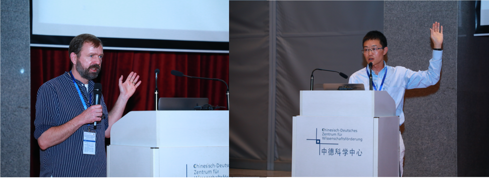
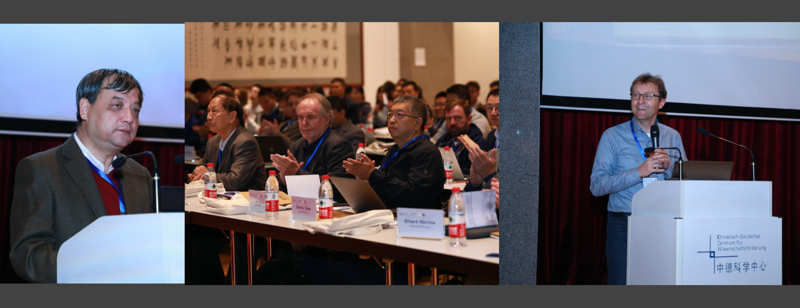
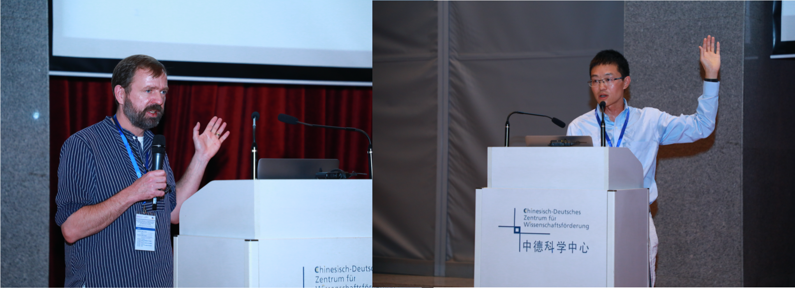
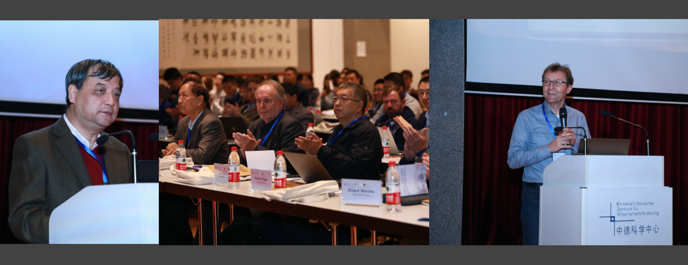
 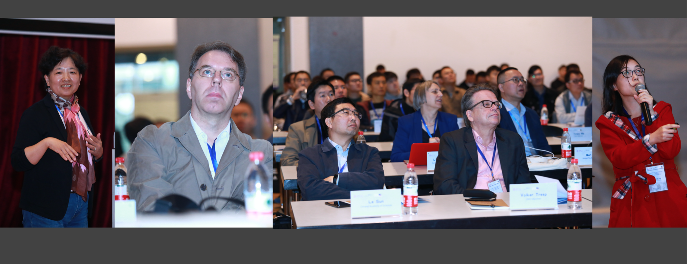
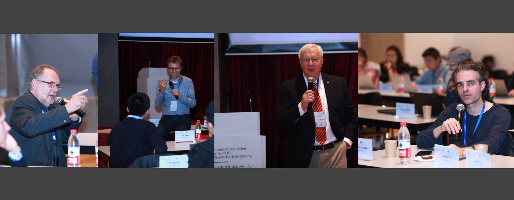
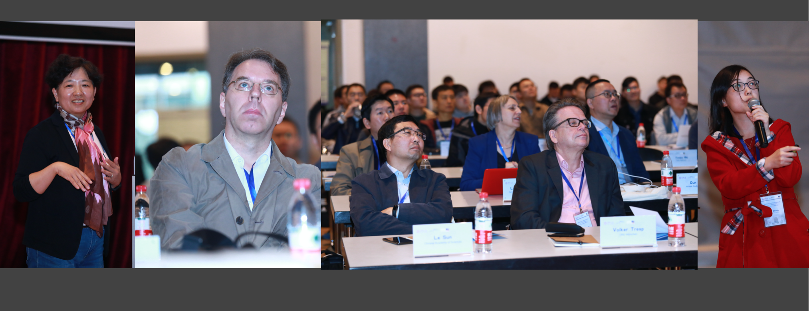
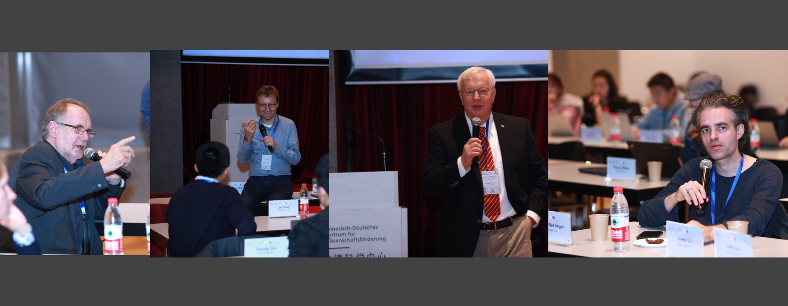
 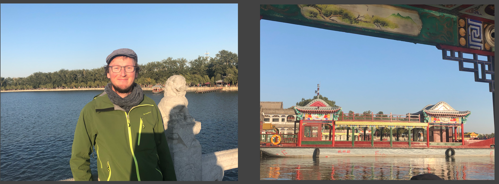
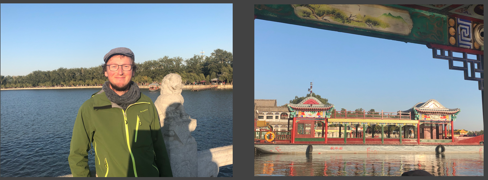
 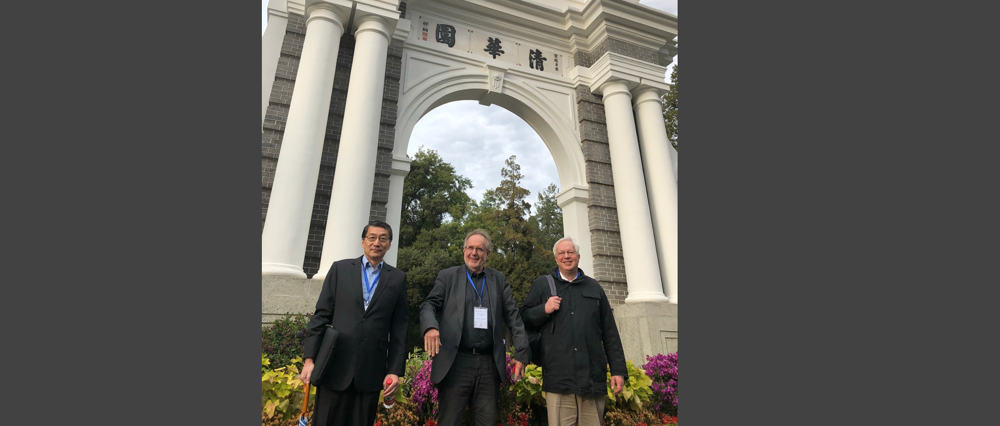
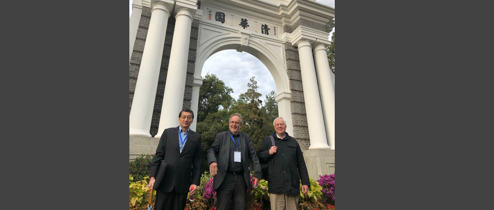